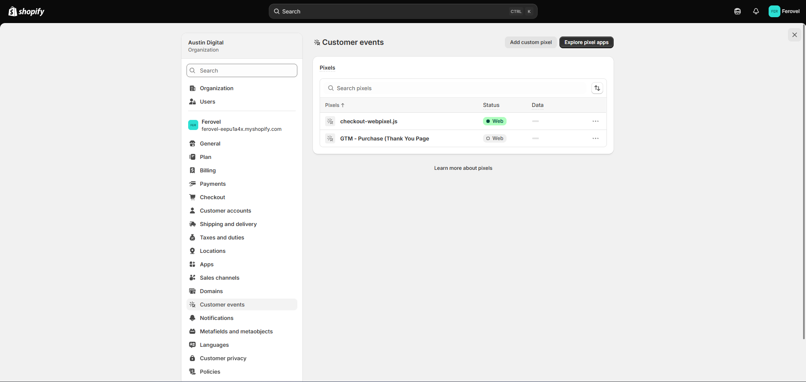

🔴 The Problem
Ferovel required a high-performance e-commerce storefront capable of handling aggressive paid media scaling. Standard Shopify themes lacked the bespoke UI features necessary for their specific user journey and, more importantly, lacked the advanced backend tracking infrastructure required for precision marketing.
🟡 The Solution
Built a bespoke e-commerce infrastructure designed for speed and gapless data collection.
Theme Liquid Engineering: Executed deep customizations to the Shopify Liquid theme to build a frictionless, conversion-optimized front-end UI tailored to the brand's aesthetic.
Comprehensive Data Layer: Engineered a custom data layer that pushed highly detailed e-commerce events (product impressions, add to cart variations, dynamic checkout steps).
Tracking Integration: Seamlessly integrated the data layer with GA4 and a dual-layer Meta Pixel/CAPI setup to ensure gapless data routing.


🟢 The Results
Provided Ferovel with a robust, scalable engine ready for aggressive paid acquisition.
- Maximized Conversion Rate: The custom UI optimizations drastically reduced user friction, resulting in a highly efficient shopping experience.
- Ready for Scale: Delivered a lightning-fast storefront armed with flawless tracking infrastructure, providing the brand with the exact foundation needed to confidently and aggressively scale their ad spend.